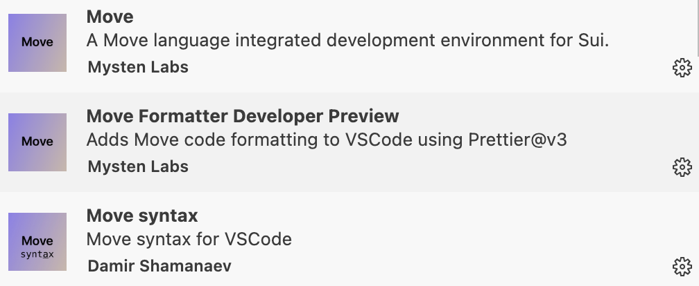

前言
课程目标与概述
课程目标
欢迎参加 Move CTF 挑战课程！本课程旨在帮助你掌握 Move 编程语言在 CTF（Capture The Flag）比赛中的应用，培养分析代码和解决安全挑战的能力。通过八节课的学习，你将能够：
- 熟练分析 Move 语言代码，识别常见漏洞和逻辑错误。
- 掌握 Move 在 CTF 中的典型题型，如整数溢出、资源管理和权限控制。
- 具备独立解决基础至中级 Move CTF 题目的能力。
- 为参加 Move 相关的 CTF 比赛做好准备，树立信心。
无论你是区块链开发者、安全研究者还是 CTF 爱好者，本课程都将为你提供独特的视角，探索 Move 语言的安全特性及其在竞赛中的潜力。
课程概述
- 课程结构：共八章节，从零开始进阶学习Move CTF。
- 学习路径：
- 从 CTF 简介和基础代码审计开始，逐步深入到高级漏洞和综合挑战。
- 每节课聚焦一个主题，配备一道 CTF 题目，循序渐进提升难度。
- 前提假设：你已通过基础 Move 语言学习（ HOH社区Move共学），熟悉基本语法、模块和资源概念。
- 预期成果：完成课程后，你将能独立分析 Move 智能合约代码，解决 CTF 挑战，并具备参加真实比赛的基本策略。
本课程结合理论与实践，鼓励动手操作和互动讨论。准备好迎接挑战了吗？让我们一起开启 Move CTF 的学习之旅！
前言
课程目标与概述
课程目标
欢迎参加 Move CTF 挑战课程！本课程旨在帮助你掌握 Move 编程语言在 CTF（Capture The Flag）比赛中的应用，培养分析代码和解决安全挑战的能力。通过八节课的学习，你将能够：
- 熟练分析 Move 语言代码，识别常见漏洞和逻辑错误。
- 掌握 Move 在 CTF 中的典型题型，如整数溢出、资源管理和权限控制。
- 具备独立解决基础至中级 Move CTF 题目的能力。
- 为参加 Move 相关的 CTF 比赛做好准备，树立信心。
无论你是区块链开发者、安全研究者还是 CTF 爱好者，本课程都将为你提供独特的视角，探索 Move 语言的安全特性及其在竞赛中的潜力。
课程概述
- 课程结构：共八章节，从零开始进阶学习Move CTF。
- 学习路径：
- 从 CTF 简介和基础代码审计开始，逐步深入到高级漏洞和综合挑战。
- 每节课聚焦一个主题，配备一道 CTF 题目，循序渐进提升难度。
- 前提假设：你已通过基础 Move 语言学习（ HOH社区Move共学），熟悉基本语法、模块和资源概念。
- 预期成果：完成课程后，你将能独立分析 Move 智能合约代码，解决 CTF 挑战，并具备参加真实比赛的基本策略。
本课程结合理论与实践，鼓励动手操作和互动讨论。准备好迎接挑战了吗？让我们一起开启 Move CTF 的学习之旅！
预备知识与工具安装
预备知识
为了顺利完成本课程，你需要具备以下基础知识：
- Move 语言基础：
- 熟悉变量声明、基本数据类型（u8、u64、address 等）和控制流（if、while）。
- 理解模块（module）和资源（struct）的概念。
- 能够编写和运行简单的 Move 程序（如 Hello World）。
- 推荐资源：HOH社区Move共学 或 Sui Move Book。
- 区块链基础：
- 了解智能合约的基本概念（如存储、交易）。
- 对 Sui 区块链平台有初步认识。
- CTF 基础（可选）：
- 知道 CTF 比赛的基本形式将有助于更快上手。
如果以上知识点有欠缺，建议先完成基础学习再加入课程。本课程将直接聚焦 Move 在 CTF 中的应用，跳过语言基础教学。
工具安装
以下是你需要安装的工具，确保在第一节课前配置好开发环境：
-
Sui CLI：
- 用于编译、运行和调试 Move 代码。
- 安装步骤：
- Sui：参考 Sui CLI 安装指南。
- 验证：运行
sui -V检查安装成功。
-
VS Code + Move 插件：
-
提供代码高亮和语法检查。
-
安装步骤：
- 下载 VS Code。
- 在扩展市场搜索
Move或Sui Move，安装相关插件。

Move和Move syntax插件为提供代码高亮和语法检查，Move Formatter Developer Preview插件提供代码格式化。
-
环境验证
- 运行以下命令测试环境：
sui move new <path-to-move-project> && cd <path-to-move-project> && sui move build - 如果编译成功，说明环境配置正确。
准备好这些工具后，你就可以无缝进入课程实践环节。遇到安装问题？请提前联系课程团队或查阅相关文档。